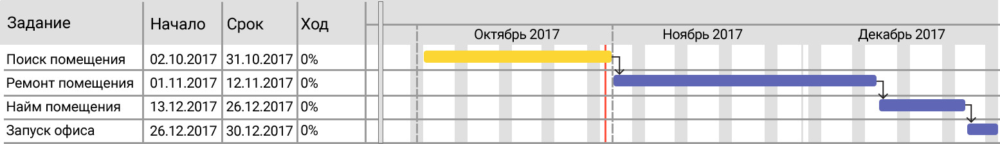

Расписания можно представить в разных видах, самые популярные виды — это сетевая диаграмма с длительностями, диаграмма контрольных точек и диаграмма Ганта.
Диаграмма Ганта
Назначение: позволяет отслеживать план/факт по длительности и датам
Это популярный тип столбчатых диаграмм (гистограмм), который используется для иллюстрации плана, графика работ по какому-либо проекту. По сути, диаграмма Гантта состоит из полос, ориентированных вдоль оси времени. Каждая полоса на диаграмме представляет отдельную задачу в составе проекта (вид работы), её концы — моменты начала и завершения работы, её протяженность — длительность работы. Вертикальной осью диаграммы служит перечень задач. Кроме того, на диаграмме могут быть отмечены совокупные задачи, проценты завершения, указатели последовательности и зависимости работ, метки ключевых моментов (вехи), метка текущего момента времени «Сегодня» и др.
В качестве простейшей диаграммы Ганта для проекта «Открытие нового офиса может выступать следущая диаграма»:
